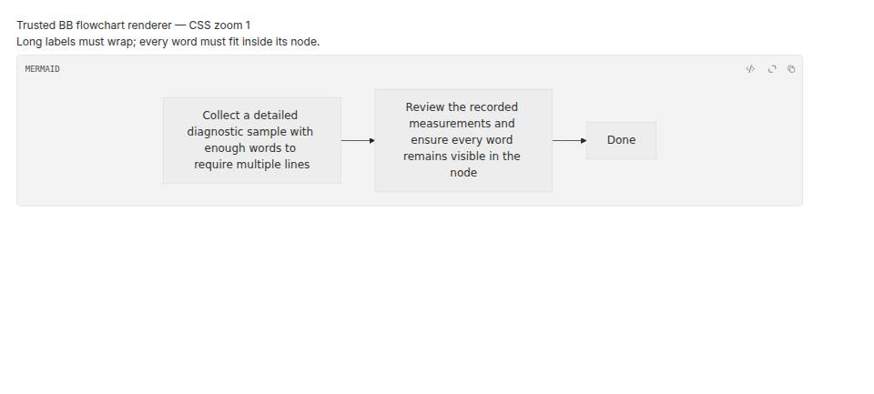
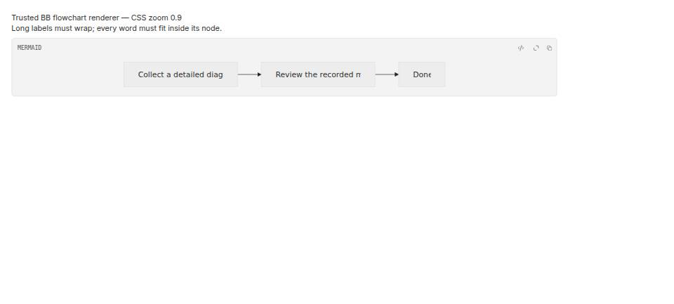

#5448 · Flowchart HTML labels fail to wrap under CSS zoom
Verdict: PARTIALLY REPRODUCED. Root-cause confidence: high for the demonstrated CSS-zoom failure; the claimed physical scaled-display trigger is unverified.
1. TL;DR
The real BB message-diagram component loses the ends of long flowchart labels when rendered under CSS zoom 0.9. At zoom 1 the same two labels wrap to several lines and every word fits. The locked Mermaid dependency measures an HTML label in screen coordinates but compares that width exactly against its unscaled 200-pixel wrapping limit. Under CSS zoom the measurement is about 180 pixels, so the branch that enables wrapping is skipped and the foreignObject clips the single-line text. Two clean trusted-main runs reproduce this mechanism, but CSS zoom is a stand-in: no physical scaled macOS display was tested.
2. Claims vs findings
| Claim | Status | Finding |
|---|---|---|
| Long flowchart labels can remain single-line and lose text. | Verified with stand-in | The actual MarkdownMermaidDiagram component clips both independently authored long labels at zoom 0.9. Screenshots and overflow assertions agree. |
| BB uses Mermaid HTML labels by default. | Verified | The component does not override label mode; rendered nodes contain foreignObject elements. |
| Wrapping depends on exact width equality. | Verified | The frozen dependency's addHtmlSpan compares bbox.width === width. Instrumentation forwards the original bounding rectangle unchanged. |
| Fractional physical display scaling causes the same failure on macOS. | Unverified | No affected physical display was available. CSS zoom changes the measured width to about 180, not the approximately 200-pixel rounding claimed for the physical case; these must not be conflated. |
| Disabling HTML labels is a safe app-level fix. | Not established | No global mode switch or compatibility claim is validated here. SVG and HTML label paths have different processing, including icon substitution only in the inspected HTML path. |
3. Environment
- Both browser-tested checkouts: trusted get-bb/bb main at
81a2b5a9b81c7203ae6df6fb48e87ae87cc12bbd; no tracked production-source changes. - Linux 7.0.0-34-generic x86_64; Node v24.18.0; pnpm 9.15.0; Vite 8.0.12; frozen Mermaid 11.15.0.
- Headless Chromium 149.0.0.0; devicePixelRatio 1; one explicit Browser Automation headless session. No provider turn was used.
- First clean clone served on 127.0.0.1:43187; second clean detached worktree on 127.0.0.1:43188. Each navigation starts a fresh page document and resets the renderer module cache and instrumentation.
- No BB app server, host daemon, project, user message, database, or production runtime data was used. The browser fixture directly imports the real component and app CSS.
4. Minimal reproduction
Prerequisites: a BB-enrolled host with Chrome/Chromium available to the Browser Automation plugin, Git, Node, and pnpm. Run the server and headless browser on that same host. Use an empty checkout; do not copy a user's messages or app data.
- Clone and install the recorded trusted base; save the fixture blocks below into the indicated paths, then serve them:
git clone --branch main https://github.com/get-bb/bb.git bb-repro cd bb-repro git checkout 81a2b5a9b81c7203ae6df6fb48e87ae87cc12bbd pnpm install --frozen-lockfile --prefer-offline pnpm exec turbo run build --filter=@bb/app # Save the two fixture blocks below under apps/app/. # Save browser-check.mjs under the checkout root. cd apps/app pnpm exec vite --config vite.config.ts --host 127.0.0.1 --port 43187 --strictPort
- In a second shell at the checkout root, navigate at zoom 1 and run the assertion, then reload at zoom 0.9 and run it again:
HOST=$(bb status --json | node -e 'let input="";process.stdin.on("data",chunk=>input+=chunk);process.stdin.on("end",()=>console.log(JSON.parse(input).thread.environment.hostId))') BROWSER=$(bb browser-automation open --backend local --headless --machine "$HOST" --json | node -e 'let input="";process.stdin.on("data",chunk=>input+=chunk);process.stdin.on("end",()=>console.log(JSON.parse(input).id))') bb browser-automation run "$BROWSER" --timeout 90s --script 'const page = await browser.getPage("main"); await page.goto("http://127.0.0.1:43187/issue-5448.html?zoom=1"); await page.waitForSelector("[role=img] svg", {timeout:60000});' --json bb browser-automation run "$BROWSER" --script-file "$PWD/browser-check.mjs" --script-host "$HOST" --json bb browser-automation run "$BROWSER" --timeout 90s --script 'const page = await browser.getPage("main"); await page.goto("http://127.0.0.1:43187/issue-5448.html?zoom=0.9"); await page.waitForSelector("[role=img] svg", {timeout:60000});' --json bb browser-automation run "$BROWSER" --script-file "$PWD/browser-check.mjs" --script-host "$HOST" --json bb browser-automation close "$BROWSER" --json - Expected: both long labels wrap and have no horizontal overflow at either zoom. Actual output from both clean runs:
zoom 1 (both clean runs): measured width: 200 long label 1: white-space=break-spaces, clientWidth=200, scrollWidth=200, height=96 long label 2: white-space=break-spaces, clientWidth=200, scrollWidth=200, height=120 allLongLabelsFit: true; browser runner exitCode: 0 zoom 0.9 (both clean runs): measured width: 180.00001525878906 long label 1: white-space=nowrap, clientWidth=200, scrollWidth=643, height=21.607711791992188 long label 2: white-space=nowrap, clientWidth=200, scrollWidth=700, height=21.607711791992188 allLongLabelsFit: false; browser runner exitCode: 1 Error: Long flowchart labels fail to wrap and overflow their measured width
The CLI command may itself succeed while its JSON contains exitCode: 1; inspect that runner field. At zoom 0.9 the short Done label still fits in this independently authored fixture. The assertion does not require every short label to fail.


Fixture: apps/app/issue-5448.html
<!doctype html>
<html lang="en">
<head>
<meta charset="UTF-8" />
<title>Flowchart wrapping reproduction</title>
<meta name="viewport" content="width=device-width, initial-scale=1" />
</head>
<body>
<main id="root"></main>
<script type="module" src="/issue-5448.tsx"></script>
</body>
</html>
Fixture: apps/app/issue-5448.tsx
import React from "react";
import { createRoot } from "react-dom/client";
import { MarkdownMermaidDiagram } from "./src/components/ui/markdown-mermaid-diagram";
import "./src/app.css";
const zoom = Number(new URLSearchParams(location.search).get("zoom") ?? "1");
document.documentElement.style.zoom = String(zoom);
const measurements: { width: number; height: number }[] = [];
const originalRect = Element.prototype.getBoundingClientRect;
Element.prototype.getBoundingClientRect = function () {
const rectangle = originalRect.call(this);
if (
this instanceof HTMLElement &&
this.tagName === "DIV" &&
this.style.maxWidth === "200px" &&
this.style.whiteSpace === "nowrap"
) {
measurements.push({ width: rectangle.width, height: rectangle.height });
}
return rectangle;
};
Object.assign(window, { measurements });
const source = `flowchart LR
start["Collect a detailed diagnostic sample with enough words to require multiple lines"]
review["Review the recorded measurements and ensure every word remains visible in the node"]
done["Done"]
start --> review --> done`;
const container = document.getElementById("root");
if (container === null) throw new Error("Missing root");
createRoot(container).render(
<div style={{ padding: "24px", maxWidth: "1200px" }}>
<h1>Trusted BB flowchart renderer — CSS zoom {zoom}</h1>
<p>Long labels must wrap; every word must fit inside its node.</p>
<MarkdownMermaidDiagram preferredTheme="light" source={source} />
</div>,
);
Focused browser regression: browser-check.mjs
const page = await browser.getPage("main");
await page.waitForSelector('[role="img"] svg foreignObject', { timeout: 60000 });
const result = await page.evaluate(() => {
const labels = [...document.querySelectorAll("svg g.node foreignObject div")].map((element) => ({
text: element.textContent,
whiteSpace: getComputedStyle(element).whiteSpace,
display: getComputedStyle(element).display,
clientWidth: element.clientWidth,
scrollWidth: element.scrollWidth,
height: element.getBoundingClientRect().height,
clipped: element.scrollWidth > element.clientWidth + 1,
}));
return {
zoom: document.documentElement.style.zoom,
userAgent: navigator.userAgent,
devicePixelRatio,
measurements: window.measurements,
labels,
allLongLabelsFit: labels.filter((label) => label.text.length > 60).every((label) => !label.clipped && label.whiteSpace !== "nowrap"),
};
});
console.log(JSON.stringify(result, null, 2));
if (!result.allLongLabelsFit) throw new Error("Long flowchart labels fail to wrap and overflow their measured width");
The measurement wrapper only records native rectangles; it does not alter returned values or Mermaid configuration. The test exercises the actual production renderer, not a mocked Mermaid implementation. Existing jsdom tests mock Mermaid rendering and cannot measure browser text overflow.
5. Root cause
The loader imports the frozen Mermaid dependency; the lockfile resolves 11.15.0. BB's buildMermaidConfig leaves HTML label behavior at its default:
function buildMermaidConfig(preferredTheme: Theme): MermaidConfig {
return {
darkMode: preferredTheme === "dark",
fontFamily: "Inter, sans-serif",
securityLevel: "strict",
startOnLoad: false,
suppressErrorRendering: true,
theme: MERMAID_THEME,
themeVariables: resolveMermaidThemePalette(),
};
}
The live component initializes Mermaid and calls render. Inspection of the package installed by the frozen lockfile finds this exact branch in mermaid/dist/chunks/mermaid.core/chunk-O5CBEL6O.mjs, addHtmlSpan, lines 299–317:
div.style("display", "table-cell");
div.style("white-space", "nowrap");
div.style("line-height", "1.5");
if (width !== Number.POSITIVE_INFINITY) {
div.style("max-width", width + "px");
div.style("text-align", "center");
}
div.attr("xmlns", "http://www.w3.org/1999/xhtml");
if (addBackground) {
div.attr("class", "labelBkg");
}
let bbox = div.node().getBoundingClientRect();
if (bbox.width === width) {
div.style("display", "table");
div.style("white-space", "break-spaces");
div.style("width", width + "px");
bbox = div.node().getBoundingClientRect();
}
return fo.node();
The initial HTML label is table-cell/nowrap with max-width 200px. Only exact equality switches it to table/break-spaces and remeasures its multiline height. The first long-label measurement is 200 at zoom 1, but 180.00001525878906 at zoom 0.9. Thus that branch is bypassed, text exceeds the 200 CSS-pixel cell width, and the generated foreignObject exposes only the beginning. This is a dependency measurement-coordinate/equality defect exposed by BB's default HTML-label path, not a failure of viewport gating or the streaming render cache.
6. Proposed fix and autopilot decision
Prefer an upstream repair that decides overflow in a consistent layout coordinate system, for example by comparing scrollWidth with clientWidth, and accounts for physical device rounding. Preserve HTML processing; test long and short labels, normal and fractional zoom, real display scaling, icon substitution, and markdown formatting. This report does not assert that a one-line epsilon change alone fixes CSS zoom.
No pull request opened. The physical display case is not reproduced. The root repair lies in the locked dependency, and globally selecting SVG labels changes rendering capabilities, so it is not a demonstrated behavior-preserving, decision-free app fix. A dependency/lockfile change is disallowed by the simple-fix rule. No branch, production patch, commit, or push to get-bb/bb was made.
The inspected SVG path still calls markdownToLines and createFormattedText: it would be inaccurate to claim all markdown support necessarily disappears. Icon substitution and HTML capabilities do need compatibility evaluation. No open linked PR appeared in issue timeline metadata or the numeric issue PR search at investigation time.
7. Verification
The same agent repeated the test in a second newly created clean detached worktree at the exact base commit. This is a second clean run, not independent-agent verification. Installation and the app Turbo build succeeded in each browser-tested checkout. Both tracked production diffs were empty and git diff --check passed.
git -C base rev-parse HEAD 81a2b5a9b81c7203ae6df6fb48e87ae87cc12bbd git -C verify rev-parse HEAD 81a2b5a9b81c7203ae6df6fb48e87ae87cc12bbd git -C base worktree add --detach ../verify 81a2b5a9b81c7203ae6df6fb48e87ae87cc12bbd cd verify pnpm install --frozen-lockfile --prefer-offline pnpm exec turbo run build --filter=@bb/app cp ../base/apps/app/issue-5448.html ../base/apps/app/issue-5448.tsx apps/app/ cd apps/app pnpm exec vite --config vite.config.ts --host 127.0.0.1 --port 43188 --strictPort first run: zoom 1 -> browser exitCode 0; zoom 0.9 -> browser exitCode 1 second run: zoom 1 -> browser exitCode 0; zoom 0.9 -> browser exitCode 1 tracked production changes: 0 in each checkout fixture source SHA-256 in both checkouts: 2b03bfc22e3098283f07fa73fd2a515d74c443718920550ae2223e00a01f13d3

No root-cause correction was needed after the second run. The final verdict remains partial because physical scaled-display behavior was not tested. No WebKit or macOS result is claimed.
8. Related issues
Repository metadata identifies #3777 as a separate streaming-preview defect. This reproduction uses a stable source in a fresh document; no streaming turn is involved. This investigation does not fetch or execute externally linked issue code.
9. Appendix and trust boundary
Exact fixture and assertion source and expected/actual outputs are inlined above so the report is self-contained. Raw runner JSON, process logs, and fixture files stay outside the public reports repository, following that repository's publication policy. Screenshots are genuine Browser Automation captures converted losslessly from their captured JPEGs to PNG containers; their underlying capture compression is not reversed. Each image was visually inspected and contains only the synthetic fixture.
The issue title, body, comments, links, and suggested code were treated as untrusted claims. No issue-provided reproduction script, branch, patch, external URL, or linked PR code was executed. The synthetic labels and fixture were authored from trusted main's rendering entry point. No user data, credentials, session identifiers, home paths, or enrolled-machine identifiers are published.
Classification: Bug / Medium priority / Medium effort / ui. Effort is Medium because a capability-preserving fix still needs diagnosis and compatibility evaluation; a blanket label-mode switch is not assumed safe. Reproduction label: partial-repro.